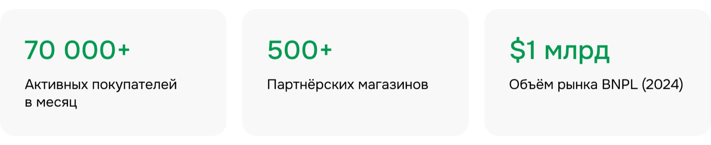
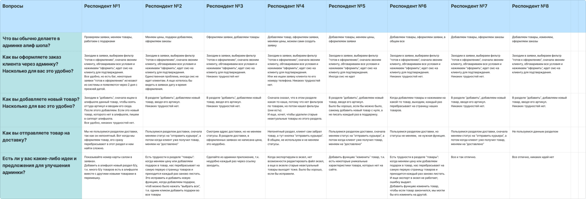
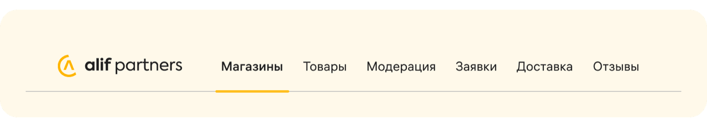
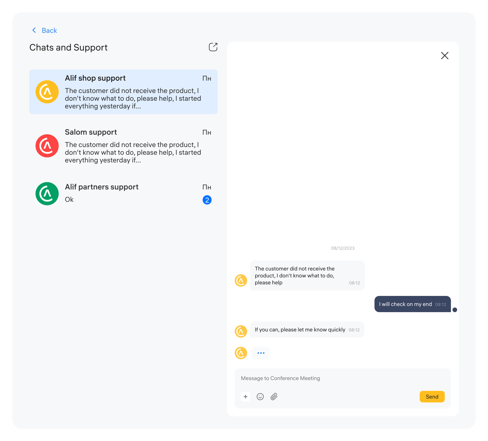
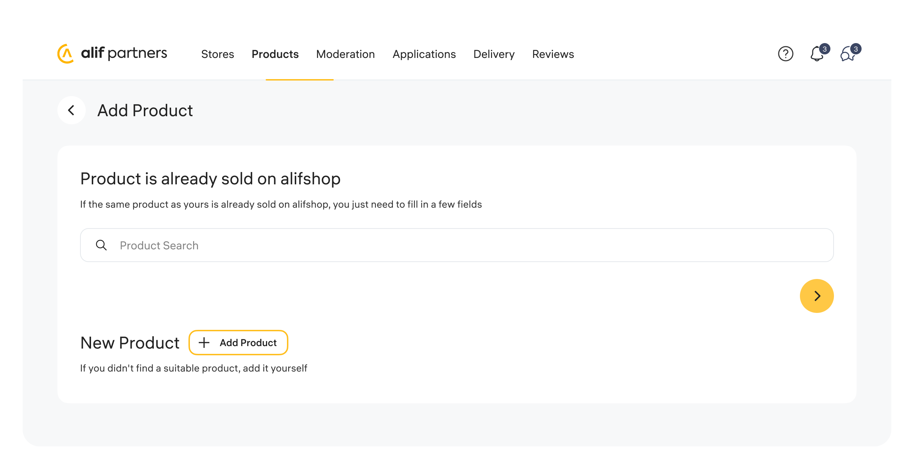
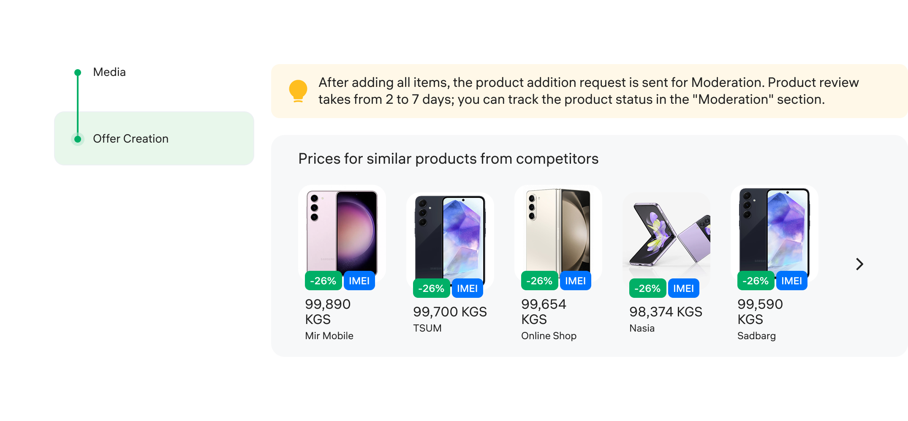
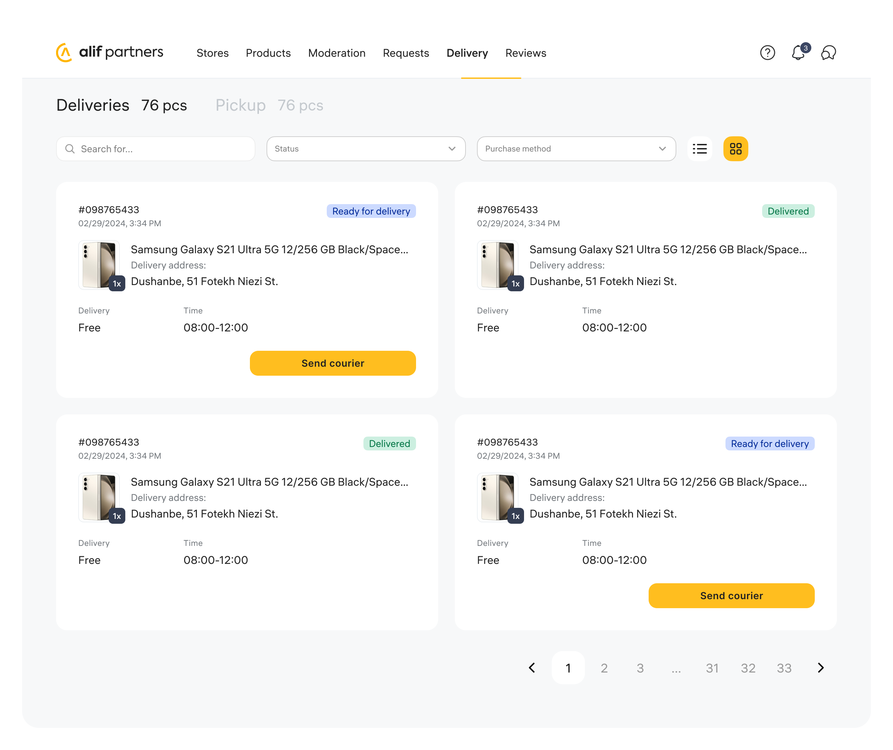
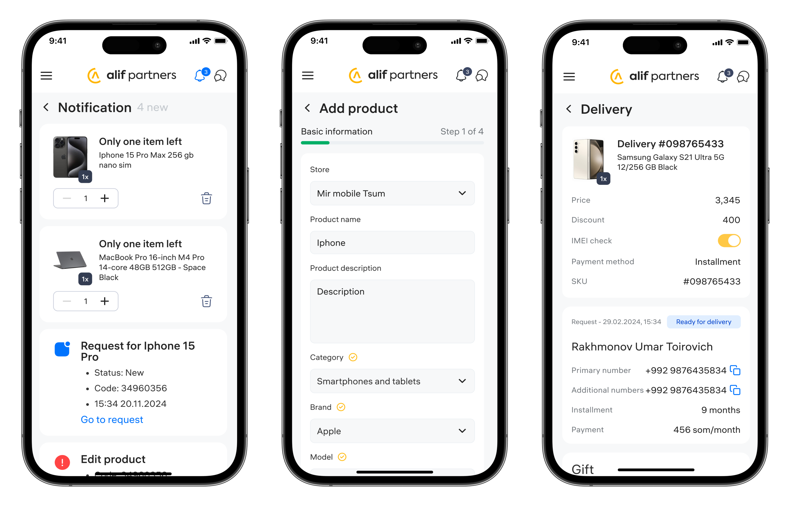

Alif, крупнейший банк Таджикистана, развивает модель рассрочки через широкую партнёрскую сеть магазинов и собственный маркетплейс Alif Shop. С ростом числа партнёров и заказов операционная нагрузка на банк начала стремительно увеличиваться.

Глубинные интервью с 8 модераторами, ежедневно работающими в админ-панели: интерфейс им знаком, а оформление заказов, добавление товаров и изменение цен не вызывают критических сложностей. Но почти все процессы завязаны на ручных действиях: поиск заявки, звонок клиенту, подтверждение по SMS. Иногда они работают нестабильно, заявки задерживаются или теряются. Раздел доставки часть модераторов не использует вовсе из-за неочевидной логики.

Интервью с партнёрами выявили другую проблему: они не видят заявку с маркетплейса, пока не позвонит колл-центр, а оформление через терминалы ограничено и иногда сбоит. Курьеры не могут самостоятельно оформлять доставку и вынуждены звонить операторам.
Необходимо доработать ключевые пользовательские сценарии админ-панели: работу с заказами и товарами, раздел доставки, а также статусы и заявки. Ускорить работу системы и сократить количество ручных операций.
Гипотеза: текущая админ-панель ориентирована на внутренние процессы, а не на задачи партнёров, из-за чего ключевые сценарии остаются зависимыми от модераторов, колл-центра и отдела партнёров. А что если сместить фокус админки на партнёров и сделать её инструментом для самостоятельной работы?
Переработала структуру админ-панели: навигация переехала из бокового сайдбара в верхнюю часть интерфейса. Новая структура включает разделы «Магазины», «Товары», «Заявки», «Доставка», «Отзывы» и отдельный раздел модерации.

Добавила единый канал коммуникации с банком в виде чата, объединяющего взаимодействие с модераторами, отделом партнёров и колл-центром, а также уведомления об остатках товаров.

Добавление товара занимало много времени из-за необходимости вручную заполнять данные, даже если товар уже существовал в системе. Добавила функцию поиска товара перед его созданием: если он уже есть на маркетплейсе, партнёр использует готовые данные и сразу переходит к добавлению медиа и созданию оффера вместо заполнения всех этапов.

Из интервью: при формировании цен на товары партнёры ориентируются на конкуренцию. В процессе добавления товара интегрировала блок с ценами на аналогичные позиции: партнёр сразу видит рыночный диапазон и принимает решение по стоимости в момент создания карточки.

Самый проблемный раздел: партнёры и курьеры тратили много времени на оформление заявок, которые приходят не только с маркетплейса, но и из оффлайн-точек. Разделила раздел на самовывоз и доставку и перенесла оформление заявок из терминалов в админку, сохранив всю бизнес-логику.

Спроектировала мобильную версию с полным функционалом, интегрировав обновлённую логику и оптимизированные процессы.

Удалось переосмыслить админ-панель из внутреннего инструмента в продукт, ориентированный на самостоятельную работу партнёров.